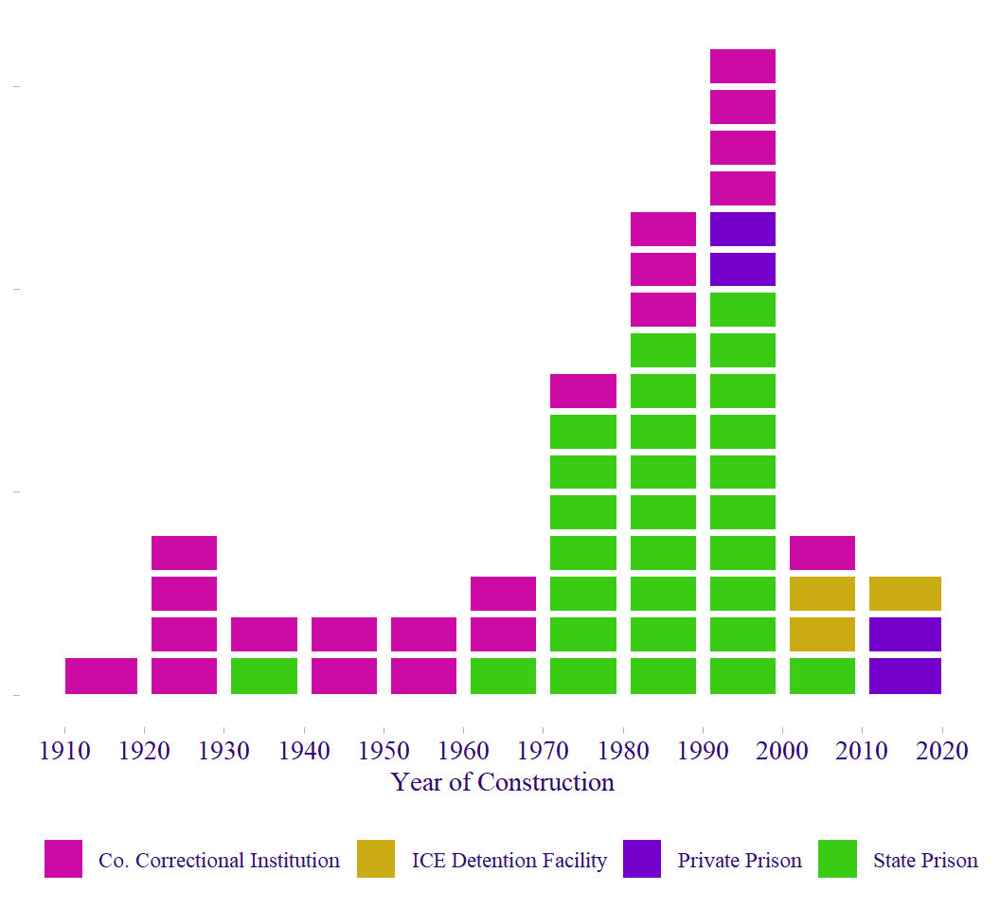
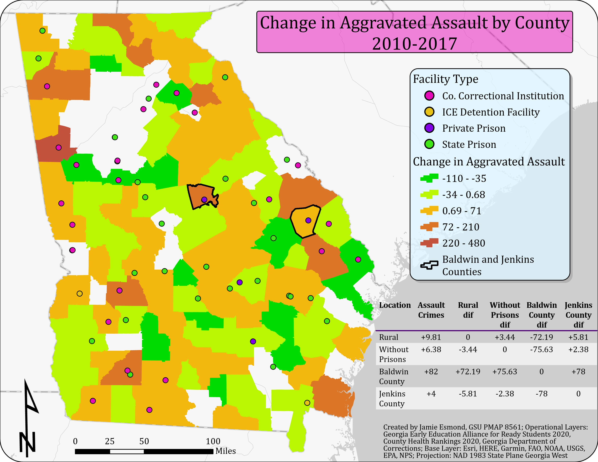
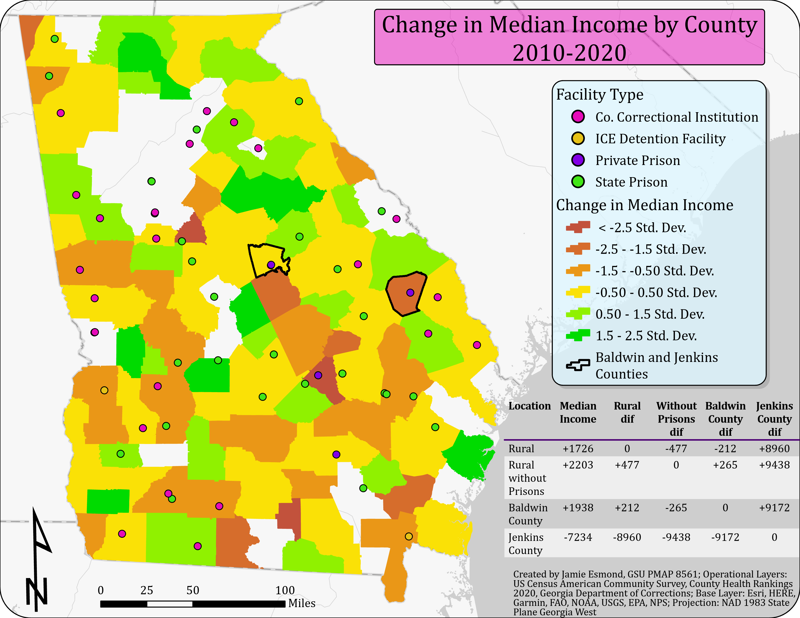
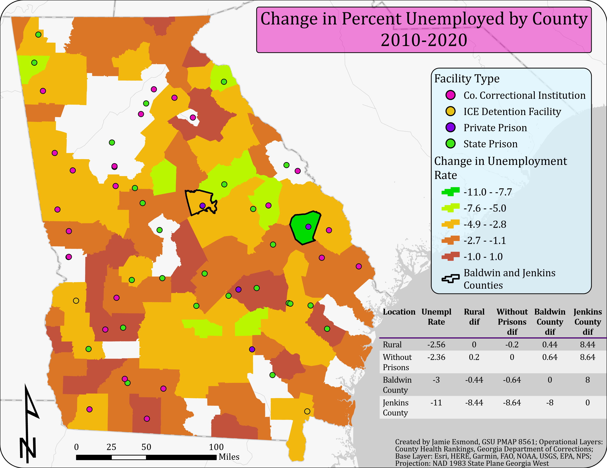
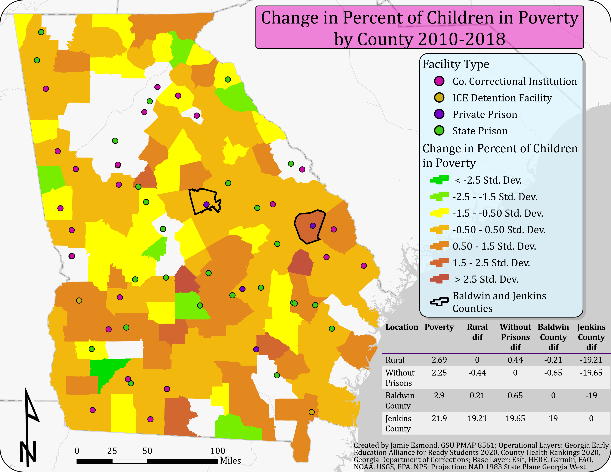
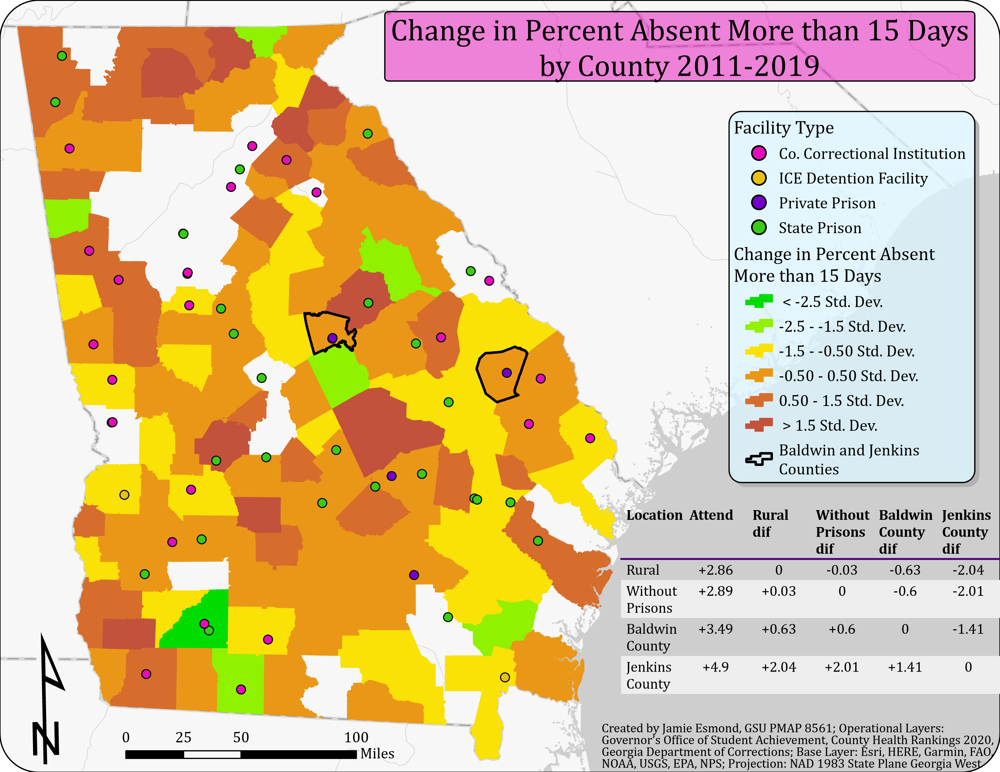

Introduction
In 2022, the federal, state, and local governments of the United States held almost two million people in some form of detention in over 6,300 facilities (Sawyer & Wagner, 2023). The systems that contribute to this large number of incarcerated people in the US have been growing steadily over the past half-century. In 1998, activist and former political prisoner Angela Davis was the first to use the term “prison industrial complex” to refer to the massive industrialized profit-driven systems that make up the penal system in the US. She said the “prison industrial system materially and morally impoverishes its inhabitants and devours the social wealth needed to address the very problems that have led to spiraling numbers of prisoners” (Davis, 1998). As the prison industrial complex has continued to expand, much has been written about its effects on prisoners and the justice system itself as it has experienced exponential growth and more focus on profit opportunities instead of reducing harm or supporting public safety. However, the focus of this research is the effects that the privatization of prisons has on the local communities that host them.
Private prison corporations like GEO Group and CoreCivic (CCA) build prisons in rural communities with the promise to bring jobs and a better quality of life to their residents. Rural communities often compete for these facilities in their towns because of these optimistic claims. However, the literature on the effects of these types of facilities does not necessarily agree that outcomes like employment growth are likely to occur due to new private prison constructions (Genter et al., 2013). Privatizing prisons, or any industry, converts the service from a public good to a private good; this commodification requires the extensive use of profit-driven tactics, and lowering costs becomes the top priority. Genter et al. (2013) argue that the profit-driven, cost-saving methods of private prisons do not stimulate the economy of host counties but instead divert local resources away from more effective solutions to promote economic growth.
There are currently fifty-nine prisons operating in Georgia, according to the Georgia Department of Corrections and Immigration and Customs Enforcement (ICE). Most of them are located in rural areas. The expansion of the prison systems peaked in the 1980s and 1990s with the rise of privatization and the popularity of tough-on-crime politics (See Figure 1). Of the fifty-nine facilities, all but seven are operated by the state or local government. Three are privately run facilities with contracts with ICE to detain non-citizens. The remaining four are privately run facilities with contracts with the state of Georgia to detain adult male felons (See Figure 2). Approximately half of all facilities in Georgia are state prisons, and county correctional institutions make up most of the remaining half. County institutions have the smallest average capacity, detaining approximately 266 adult felons. State prisons are significantly larger, with an average of 1,084 capacity for adult felons. However, the average capacity for private prisons was almost double that of state prisons at 2,069 (See Table 1).
| Type of Facility | Average Capacity |
|---|---|
| Co. Correctional Institution | 266 |
| ICE Detention Facility | 1213 |
| Private Prison | 2069 |
| State Prison | 1085 |

In Georgia, two private prisons were recently constructed; one in Baldwin County in 2011 and another in Jenkins County in 2012. The GEO Group, who constructed and continues to maintain the Riverbend Correctional Facility in Baldwin County, boasted about the opening of the new facility in their publication for employees and their families. They claimed to bring “significant employment opportunities to Milledgeville and Baldwin County” (The GEO Group Opens Riverbend Correctional Facility in Milledgeville, Georgia., 2012). When the construction of the first prison was announced in 2010 for Baldwin County, Jenkins County was also bidding for that prison but would later get a contract through CCA to build a prison the next year (Bennett, 2010; Grant, 2010). In both cases, the private prison corporations promised jobs and investment in the local communities as a result of the new prison.
This analysis will compare these two counties to other rural counties in Georgia over the years following the construction of the prison using several quality-of-life indicators to assess whether these new prisons did improve the quality of life for the residents of these areas. For this analysis, counties are considered rural if they are more than 30% rural, according to the 2020 County Health Rankings data. The indicators analyzed involve crime (specifically aggravated assault), median income, unemployment rate, child poverty rate, and school attendance.
Data
A variety of data was used to answer these questions about the change in the quality of life in these counties. Some of the data used were already formatted for use in ArcGIS as a feature layer. Other data needed to be combined with spatial information to represent it in the maps.
The Georgia Early Education Alliance for Ready Students 2020 is a compilation of data from different sources related to factors that may influence educational outcomes developed by the Research & Analytics Group of the Atlanta Regional Commission into a feature layer for ArcGIS. Data sources include Georgia’s Department of Early Care and Learning (DECAL) KOALA, Georgia Department of Public Health Online Analytical Statistical Information System (DPH OASIS), Fostering Court Improvement, Georgia Department of Education (GA DOE), Georgia Bureau of Investigation (GBI), and American Community Survey and Small Area Health Insurance Estimates (SAHIE) Program from U.S. Census Bureau. This data includes many variables ranging from basic population parameters and birth rates to economic indicators and crime reports. This analysis uses the following variables from this feature layer:
- Number of Violent crimes reported: Aggravated assault 2010 and 2017 (AggAssault_2010 and AggAssault_2017, Long)
- Change, % Children under 18 years below poverty, 2010-18 (chpPopPovU18_e1018, Double)
Data from the United States Census Bureau’s American Community Survey (ACS) was used to assess each county’s median income change between 2010 and 2020. The data for 2020 was available as a feature layer from Esri Demographics; however, the data for 2010 was acquired directly from the Census Bureau and joined to the 2020 feature layer to be analyzed spatially and over time.
The County Health Rankings 2020 is available from Esri Demographics and contains many relevant variables. The Robert Wood Johnson Foundation and the University of Wisconsin Population Health Institute worked together to compile this data that measures health factors and outcomes of nearly all counties in the nation. In this analysis, the variables used were the Percentage of Unemployed (v023_rawvalue, Double) and the Rural Percentage (v058_rawvalue, Double) for each county. The County Health Rankings 2010 was accessed directly from the County Health Rankings organization; it was joined with the 2020 feature layer to assess the change in unemployment over time.
The Governor’s Office of Student Achievement publishes data on various educational metrics for Georgia schools and school districts. However, much of the school testing data covers only a short period since the tests often change every few years, and college admission tests only gauge high school students. To better understand school quality over a more extended period, attendance data is used for students of all ages for every school in each school district. The 2010-2011 school year data is combined with the 2018-2019 school year data to assess the change over time, then joined with school districts polygons (Ersi US Federal Data) for display.
Though this analysis focuses on Baldwin and Jenkins County and the private prison recently constructed, other prisons in Georgia are included as a reference and to control for the difference between rural counties without and with prisons to determine if there is an overall difference. Data for all correctional facilities in Georgia was found on the Department of Corrections (DOC) website. Data attributes for all correctional facilities were obtained from the DOC website, including facility name, physical address, population, construction year, capacity, security level, and facility type. Only data for prisons and correctional institutions were collected; rehabilitation, probation, and transitional centers were excluded from this analysis. Also, it should be noted that the Georgia Department of Corrections does not oversee the three privately run facilities in Georgia that have contracts with ICE; these were added separately to the list of facilities in Georgia with the limited information available publicly from the ICE website.
Methods
Because the data comes from several different sources, various methods were used to clean and organize the data. The first variable analyzed was crime using data from the Georgia Early Education Alliance for Ready Students 2020 data, specifically aggravated assault crimes in 2010 and 2017. A new field was generated to calculate the difference in aggravated assault crime reports between each year for each county in Georgia (Change # of Aggravated Assualt Crimes 2010-2017, Chg_Assault, Long).
The next three variables are related to the economic indicators of the counties. The change in median income from 2010 to 2020 was determined by joining attribute values from the ACS for each year and calculating the difference after adjusting the 2010 values for inflation (Change in Median Income 2010 – 2020, Chg_Median_Income, Double). The values representing the change in the percentage of unemployed people for each county were calculated from the County Health Rankings 2010 and 2020 (Change in % Unemployed 2010-2020, Chg_Unempoyment, Long). The Georgia Early Education Alliance for Ready Students 2020 data included the attribute for the change in the rate of child poverty calculated from 2010 to 2018 (chpPopPovU18_e1018, Double).
The final variable concerns education. School attendance data was collected from the Governor’s Office of Student Achievement for the school year 2010-2011 and 2018-2019 separately and then combined to calculate the change in the percentage absent over fifteen days (Chg_Over15Percent, Double). This data included an aggregate percentage of students absent more than fifteen days for all grades and all schools for each school district. The school districts were apportioned with the county boundaries to measure the expected average for each county, weighing the area of the school district encompassed within the county.
For reference and control over the variables, data about the rural percentage of each county was obtained from the County Health Rankings 2020 and was combined with the data collected from the Georgia Department of Corrections about prison locations. By isolating the counties that are more than 30% rural and those with or without prisons, the analysis could evaluate the differences between these types of counties and the two counties with new private prisons (See Table 2). After all the 2010 data had been updated and combined with the data from the later year, the field with the change in the statistics for each rural county was combined into a single layer for analysis.
| All Counties | 159 |
| Rural Counties (>30% rural) | 135 |
| Rural Counties without Prisons | 90 |
| New Private Prisons | 2 |
Findings
Though nothing about reducing crime is explicitly expressed in the promises made by private prison corporations, residents may expect that an increase in jobs and an economic boost would lower violent crime rates in the area (Ouimet, 2012). On the other hand, it is hypothesized that a new prison could affect assault crimes in the area. Aggravated assault includes domestic violence. Because people employed as correctional officers may be more exposed to a culture of violence within the prison in their work life, they may bring that home with them in the form of elevated violent crime such as aggravated assault (Valentine et al., 2012). The analysis of the data from the Georgia Early Education Alliance for Ready Students 2020 shows that the overall change in aggravated assault crimes across all rural counties was an increase of an average of 9.81 reported incidents; for rural counties without prisons, the change was an increase of an average of 6.38 reported incidents. However, in Baldwin County, in the years following the construction of the Riverbend Correctional Facility, the number of reported aggravated assault crimes rose by 82 reported crimes from 2010 to 2017. In Jenkins County, the increase was slightly less than the rural county average at only four more crimes reported in 2017 than in 2010 (See Figure 3).

When it comes to the economic impacts on the communities hosting prisons in their county, this is where the corporations made explicit promises to make improvements. With the promise of adding hundreds of good new jobs, the new industry was expected to raise the median income of the county. However, because the lowest-paying jobs, such as janitorial positions, are often filled by the prisoners themselves; this can lower the average wages for the area since the most menial jobs can be underbid by the free or cheap labor of the prisoners (Genter et al., 2013). The analysis found that the change in the median income for all rural counties in Georgia from 2010 through 2020 was an increase of an average of $1,726 in 2020 dollars. Rural counties without prisons saw a slightly higher increase in earnings at an average of $2,203 from 2010 through 2020. Baldwin County fell right between these two averages, with an increase of $1,938 from 2010 to 2020. However, Jenkins County saw a sharp decrease of $7,234 in median income over the same ten-year period (See Figure 4).

Campaigners for private prisons cite job creation as the number one incentive to build in depressed rural areas. Counties bid for these contracts specifically to bring new jobs to their communities, but is the impact on unemployment rates better in these counties than in other rural counties in the state? This analysis shows that, overall, in rural counties in Georgia, the percentage of unemployed fell by an average of 2.56 percentage points between 2010 and 2020. Rural counties without prisons saw a similar drop in unemployment rates on average. Baldwin County was also right on track with the county average for Georgia, with a 3-percentage point drop from 2010 to 2020. However, Jenkins County did much better than the average and better than any other rural county in Georgia, dropping 11 percentage points from 2010 to 2020 (See Figure 5).

Aside from income and employment, the rate of children in poverty is another economic metric by which to gauge the well-being of a community. With the economic stimulation promised by prison corporations, the goal would be to help lift families out of poverty. This analysis shows that the overall change in the rate of children in poverty in rural counties in Georgia was an increase of 2.69 percentage points from 2010 to 2018. Rural counties without prisons had a similar increase of 2.25 percentage points. In Baldwin County, the change in the rate of children in poverty grew only a small amount more than in rural counties overall. However, in Jenkins County, the rate of children in poverty grew by 21.9 percentage points, well over the average for rural counties in Georgia (See Figure 6).

Private prison corporations not only promise economic stimulation to communities that host their facilities, but they also promise to invest in the local community (Joseph, 2012). As a result of these promised investments, these communities should see an additional boost to educational and youth outcomes. This analysis demonstrates that the average change in the percentage of students absent more than 15 days for rural counties in Georgia was an increase of 2.86 percentage points from 2011 to 2019. Rural counties without prisons had an almost identical rate. The change in the chronic absenteeism rate in Baldwin County was just above the average for rural Georgia at a 3.49 percentage point increase. However, Jenkins County’s change in the rate was well above the average with a 4.9 percentage point increase (See Figure 7).

Discussion
Overall, in rural counties in Georgia, the number of aggravated assault crimes reported went up between 2010 and 2017. The economic factors were inconsistent. The median income rose from 2010 to 2020, and the unemployment rate fell from 2010 to 2020; however, the rate of children in poverty rose between 2010 and 2018. Chronic absenteeism for students also increased between the 2010-2011 and 2018-2019 school years. The findings for four out of five of these variables showed that Baldwin and Jenkins Counties fared worse or about the same as other rural counties in Georgia. The only variable that showed a positive impact was the unemployment rate, which was just a bit better than the average in Baldwin County but far better than the average in Jenkins County. Baldwin County’s changes were close to the average for rural counties for every variable except for the crime variable for aggravated assault crimes which was much worse. Jenkins County’s changes were worse than the average for three of the variables, median income, children in poverty, and attendance. The only variable for Jenkins County consistent with the rural average was aggravated assault crimes. In sum, it seems these new prisons did little to affect most variables and, in some cases, negatively affected them, except for unemployment rates (See Table 3).
| County | Assault | Income | Unemployment | Poverty | Attendance |
|---|---|---|---|---|---|
| Baldwin County | +71.15 | +$302 | −7.84 | +0.12 | +0.76 |
| Jenkins County | −6.85 | −$8,870 | −3.84 | +19.12 | +2.17 |
Conclusion and Policy Implications
This research helps to inform stakeholders in these communities about whether these prisons were a wise investment. Rural communities looking to attract new industries to their area should consider that the private prison industry may not be the best industry to pursue as the unintended effects of toxic prison culture and practices may undermine the economic stimulation intended. It also supports those working to hold private prison corporations responsible for the unintended effects of their prison business.
The policy implications of this project are to highlight the unintended costs of the private prison industry and the prison industrial complex as a whole. Numerous studies have shown how imprisonment can harm those incarcerated and their families. Still, this research shows that the harm is not necessarily confined to those directly affected by the penal system. The communities that are home to these facilities may also face obstacles to improved quality of life due to the presence of an industry that preys on the vulnerable and seeks profit at any cost in the name of economic stimulation and public safety.
Data Sources
Georgia Department of Corrections
Georgia Early Education Alliance for Ready Students 2020
Governor’s Office of Student Achievement - Attendance Data 2011 and 2019
Immigration and Customs Enforcement
United States Census Bureau’s American Community Survey 2010 and 2020
References
Bennett, J. (2010, February 10). Milledgeville Getting New Prison and Jobs. Georgia Public Broadcasting. https://www.gpb.org/news/2010/02/10/milledgeville-getting-new-prison-and-jobs
Davis, A. (1998, September 10). Masked Racism: Reflections on the Prison Industrial Complex - Colorlines. ColorLines. https://colorlines.com/article/masked-racism-reflections-prison-industrial-complex/
Genter, S., Hooks, G., & Mosher, C. (2013). Prisons, jobs and privatization: The impact of prisons on employment growth in rural US counties, 1997–2004. Social Science Research, 42(3), 596–610. https://doi.org/10.1016/j.ssresearch.2012.12.008
Grant, L. (2010, September 17). CCA Awarded Corrections Contract in Georgia. PRWeb. https://www.prweb.com/releases/CCA/Georgia-Corrections/prweb4530834.htm
Ouimet, M. (2012). A World of Homicides: The Effect of Economic Development, Income Inequality, and Excess Infant Mortality on the Homicide Rate for 165 Countries in 2010. Homicide Studies, 16(3), 238–258. https://doi.org/10.1177/1088767912442500
Sawyer, P. P., & Wagner, P. (2023). Mass Incarceration: The Whole Pie 2023. Prison Policy Initiative. https://www.prisonpolicy.org/reports/pie2023.html
The GEO Group Opens Riverbend Correctional Facility in Milledgeville, Georgia. (2012). GEO Group. https://www.geogroup.com/userfiles/18137ea6-ca5a-4b0d-a6d4-1ec7f72204f6.pdf
Valentine, C., Oehme, K., & Martin, A. (2012). Correctional Officers and Domestic Violence: Experiences and Attitudes. Journal of Family Violence, 27(6), 531–545. https://doi.org/10.1007/s10896-012-9448-y